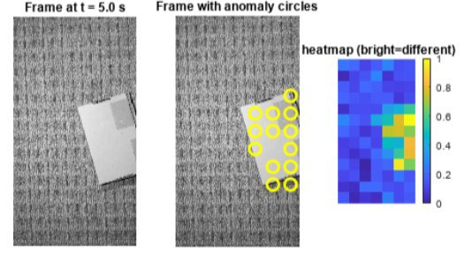

Experiment 01
Vision-Based Floor Inspection Using 2D DFT
Developed a vision-based floor inspection system for a robot vacuum using patch-wise 2D Fourier transforms to detect debris on carpet. Compared frequency-domain texture signatures to a clean reference to generate anomaly heatmaps and inform design choices such as patch size, lighting, and detection thresholds.
Tools: MATLAB, 2D DFT, image processing, video analysis
Original report ↗